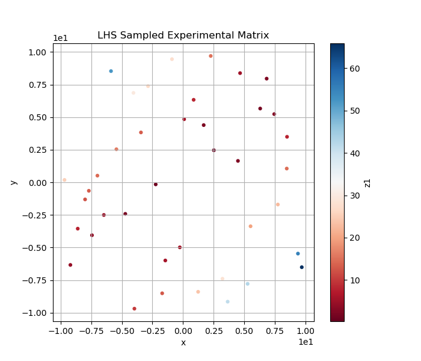
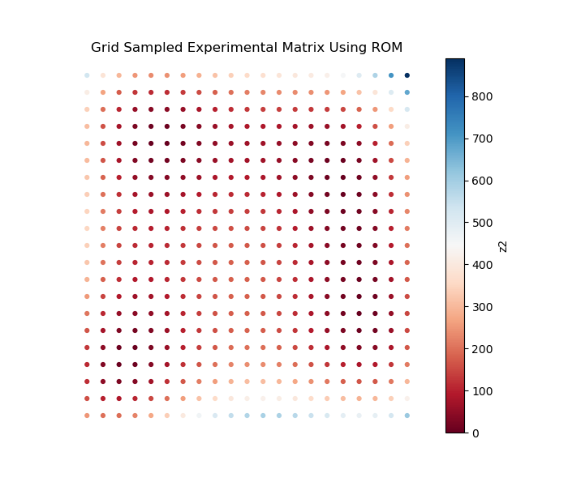
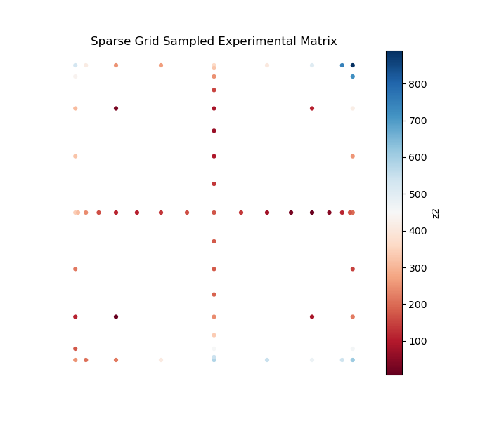
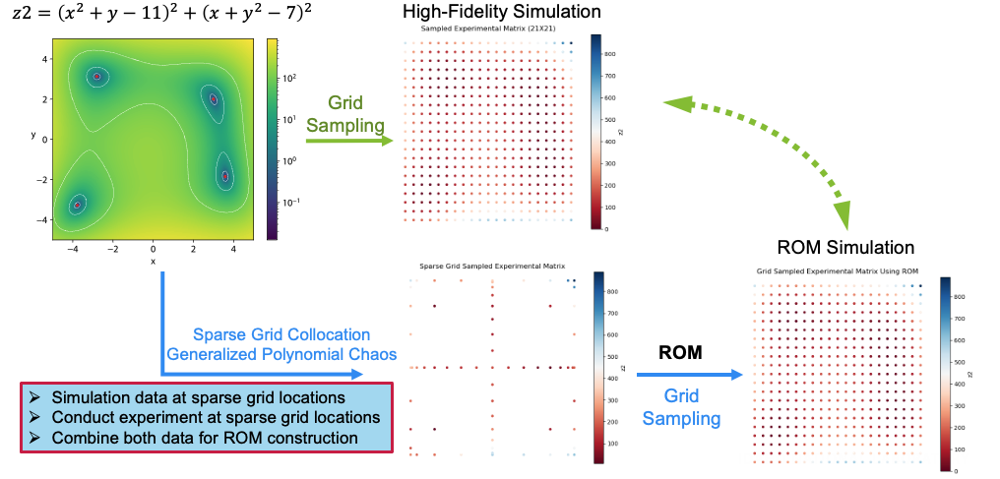
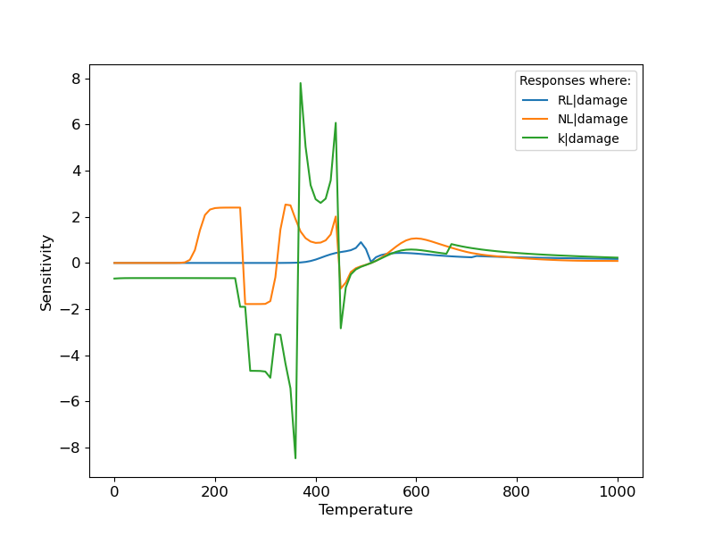
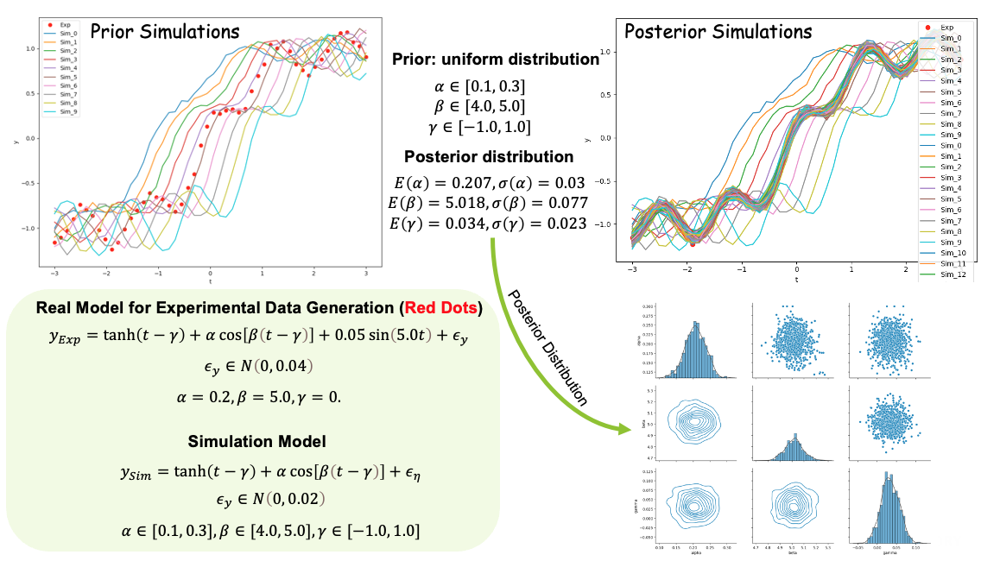
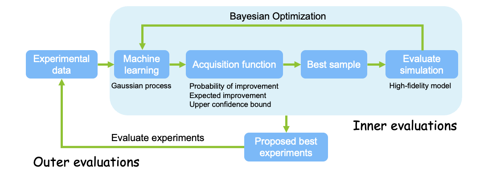
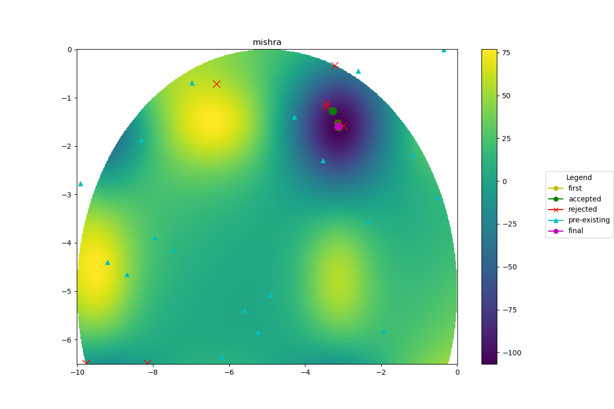
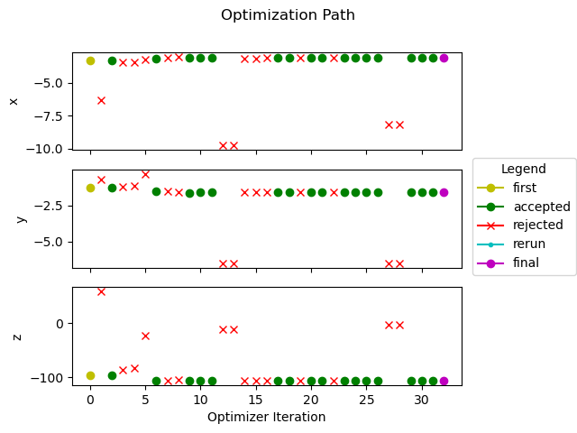
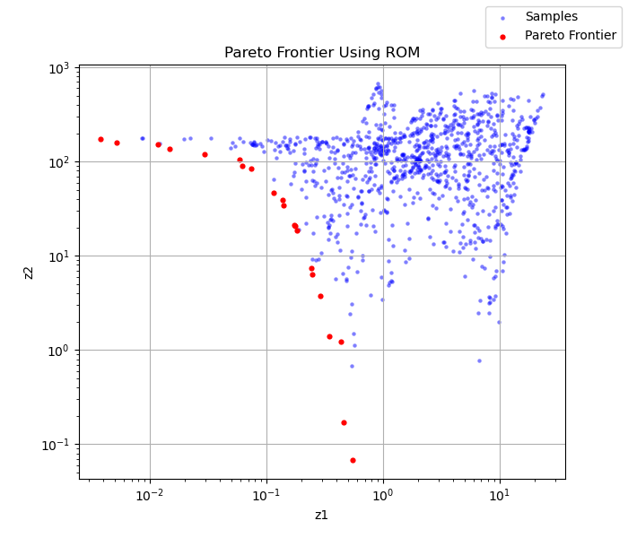

Introduction¶
What is POEM¶
POEM is a platform for optimal experiment management, powered with automated machine learning to accelerate the discovery of optimal solutions, and automatically guide the design of experiments to be evaluated. POEM currently supports 1) random model explorations for experiment design, 2) sparse grid model explorations with Gaussian Polynomial Chaos surrogate model to accelerate experiment design ,3) time-dependent model sensitivity and uncertainty analysis to identify the importance features for experiment design, 4) model calibrations via Bayesian inference to integrate experiments to improve model performance, and 5) Bayesian optimization for optimal experimental design. In addition, POEM aims to simplify the process of experimental design for users, enabling them to analyze the data with minimal human intervention, and improving the technological output from research activities.
POEM leverages RAVEN (a robust platform to support model explorations and decision making) to allow for large scalability and reduction of the computational costs and provides access to complex physical models while performing optimal experimental design.
Capabilities¶
Random model explorations for experiment design
- 
Machine learning aided parameter space exploration
See Train ROM

Sparse grid stochastic collocation with Gaussian Polynomial Chaos expansions to accelerate experimental design
-  
Dynamic sensitivity and uncertainty analysis
- 
Model calibration through Bayesian inference
- 
Bayesian optimization for optimal experimental design
-   
Pareto Frontier to guide the design of experiment to be evaluated
